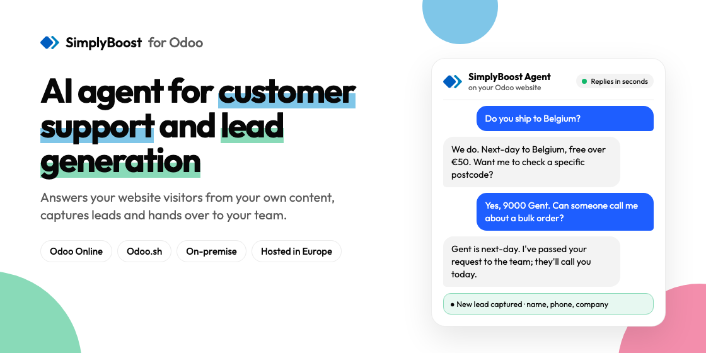

Add an AI assistant to your Odoo website. It answers visitors' questions from your own content, day and night, and passes the conversation to your team when a person is needed.
This app connects your Odoo website to SimplyBoost, an external chatbot service. You need a SimplyBoost account and a chatbot set up there; this app adds that chatbot to your website pages.

It answers from the website pages, documents and text you add to your chatbot in SimplyBoost.
It replies in the language the visitor writes in, or always in the language you choose.
A contact form in the chat can ask interested visitors for their details. You can switch it off.
When a visitor asks for a person, your team is alerted and can reply from the SimplyBoost inbox.
With several Odoo websites, each website can show its own chatbot, or none.
Paste the Bot ID in the Website settings. The look of the chat is set in SimplyBoost.
The chat runs on SimplyBoost's servers. Nothing is sent until you set a Bot ID and tick the consent box in the settings. From then on, on the website pages of that Odoo website:
The chat keeps the conversation in the visitor's browser so it continues across pages. This app does not send your Odoo records (contacts, orders, invoices) anywhere. SimplyBoost's privacy policy is published on simplyboost.io under Privacy Policy.
Questions or problems: support@simplyboost.io